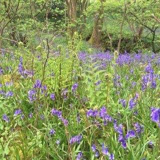

All I can remember is rain, rain and yet more rain. There were times when I had to dust off waterproof gear that had not been worn for a good decade, this because I had too much trying to dry-out on a daily basis.
The second big deal for winter was to receive a letter from DEFRA informing us that one of the neighbouring farms had purchased in a Tb infected cow. The result of this was that all farms had within a circular distance of the outbreak had to immediately enter a six month testing period. This after we had just passed fully our previous four year test. To say this caused some considerable upset locally with the guilty farmers, who tend to deal more than farm, is an understatement.
Luckily all of my cattle were located on the high tops. They had no neighbouring cattle within a mile of them. Even so, all testing which has now been completed was a concern for all. 100% of my S'Horns passed both tests clearly. However, this year we have three beautiful heifers who are too young to go to my bull so will have to stay at home, thus double electric fencing has been installed at some cost. What a mess.
Jazz our new sheep dog has grown and matured at a pace. She is now undergoing her training and already at nine months of age know her 'aways' from her 'come-byes'. She commenced on the ducks, then the geese, and now our sheep flock. She is a natural, and turning out to be a real dream.
All poultry and sheep have bred well, and stock is growing well to date. My cattle however do not commence to calve until June. We await with anticipation. Our new bull; 'The Jazzman' has grown well and is now out with a small number of his ladies.
Two events over winter included the final journey of one of my original foundation cows. She was fourteen years old and had given us eleven calves, rearing the last one on only one cylinder. She has been the bedrock of the herd with a number of daughters, and grand-daughters in the herd. The second notable event was the sale of Greensleybank Ektor to another pedigree breeder wishing to to grow their herd. We were sad to see both go.
One of the improvements has been that I can now butcher my own lambs, thus helping keep the cost of my Herdwick lamb sales down for my customers. Also, as every year we have new internet customers, this time in Essex, E. Sussex, E. Yorkshire and Warwickshire. Thank you all.
On the bird-life front we have three pairs of Swallows, a pair of Pied Wagtails, and my nest boxes for the House Sparrows have been a huge success with 100% occupancy! Further away we have the usual Lapwing, Curlew, Oystercatcher and Redshank families. This springtime we actually observed a young Redshank, I can only describe it as looking like a pipe cleaner. Also of note, the local Cuckoos have perhaps been more prominent vocally than previous years as I have had numerous confirmations which is great to report.
We now look forward to summer.
Somewhat of a damp summer, we had the very odd patch of clear weather but all told it was not a great summer-time weather wise. I remember cutting my grass for winter fodder over a two day period in early July, and the tractor windscreen being spattered by the odd drop of rain in the process on both days.
Autumn however delivered a good dry month in October, and with some fantastic colours on the various trees. One morning as the sun was casting its first rays across the dale-side it caught the profile of thousands of spider webs linked from grass stem, to grass stem. My words do not do the vista I observed justice. It really was a special sight.
Another happy memory of late summer, early autumn in an area of the dales that has very few people and certainly no ramblers, was coming across a sea of Scabious and Betony with the odd Yarrow in there. A solid blue, red and white heaven over at least a quarter of an acre, on a steep bank where the had been no sheep. Magnificent.
All cattle calved again well to Ektor, resulting in three steers, but also I can happily report that we also had three lovely heifers delivered. One of them has been given the house name of Rose, she is a cracker. All will join the herd in time as we need some fresh youngsters. Also of note on the bovine front, we have purchased a new young bull, importantly from a fully health accredited herd on the east coast of Yorkshire. We selected him (Kelleythorpe Jazzmann) primarily for his health status, but also for his potential of delivering further width and colour to my herd. At the moment at great deal of time is going into him, and as a result he seems to be very quiet. Work on; 'what goes in is what you get out'. Unlike Ektor who is a beautiful strawberry roan colour, the Jazzman is in the main a deep red colour. Ektor will now be made for sale, all of our 2016 crop of calves will be by him. We will be sad to see him go. All cattle are down from the high tops, with some but not all inside as we have already had a good dose of snow. The remainder are wanting to come inside. This, or just feed them outside as I usually do until after Christmas.
On the mother nature front, I was this year pleased to attract a flock of House Sparrows to the farm via my bird feeders. They bred well in one of our buildings, this until the Jackdaws wrecked the nests. A job for me over winter is to install four, or five sturdy nest boxes in said building that are Jackdaw proof.
One funny incident recently was prior to the recent snow, when we had more than a week of solid rain (November). As every year, roads became flooded. On one occasion one of my friends was on his way down the dale in his L/Rover so he could easily progress through the various road closures. In doing so he came across an old couple in a small vehicle that had been stranded in about a foot (0.3M) of water. Being public spirited he went to help them, on approaching the vehicle he observed them reading a map!
Finally, in August we went to collect our new sheepdog puppy as I am getting too old to be running after sheep that have a differing ideas to mine. Well, to say our lives changed is an understatement. Jazz (a coincidence with the bull) is full of life, and there is never a dull moment. She is pictured now on the site.
The winter months experienced at Greensleybank were of a standard nature in that we had the usual gales, rain, sleet and snow but in no great quantities, or extremes. I call this a fair winter.
All of our cattle came in just prior to 2015 commencing, and all have wintered well. As I scribe this small update of information we have so far had three healthy vigorous calves, and to my utter joy two of them were heifers. At last. Two more cows are now nearing their time, and the cycle continues.
All Herdwicks lambed well, all ewes so far rearing at least one fit lamb. All told they lambed a respectful 165%, and all are now enjoying the fresh shoots of green.
This spring time was improved for my geese as I set to reducing the number of attacks from the Rooks and Jackdaws on the nests. My strategy worked up to a point.
As spring is now with us, the local bird life has never been so prominent. In that around our buildings we have youngsters in the nest of; Blackbird, House Sparrow, Hedge Sparrow, Blue Tit, Goldfinch, Swallow, Pied Wagtail and Wren. Also, in one of our older barns away from the homestead we have a pair of Kestrels. Further afield Moorhens, Curlew, Oystercatcher, Redshank, Mallard and Lapwing have all fledged youngsters. It is too early for Partridge. I have also come across a Meadow Pippets nest with two eggs enclosed on the high tops. Also, when I visit my cattle located where I found the M.Pippets eggs I regularly see a Redstart on the journey up within wooded valleys that I transcend.
I have had my camera out again, and this time have included some local shots. The Bluebells were magical.
I now await for whatever summer will deliver.
The weather is dreary as I sit writing this blog update on a late November afternoon which has low cloud, is misty and cold. However, I look back to what was a super summer. One filled with many clear days of sunshine, interspersed with grass growing showers. As always based where we are, whenever we have in the main sunny weather we have less winter forage than on a wet summer. I know, never happy.
All of our cattle excepting Ektor the bull are still outside, with the majority around the pasture fields around home. We still do have some yearling steers located at the 1350 Ft. level, these animals however will come home this forthcoming weekend which is the latest date yet that they have foraged on this terrain. Again 100% bull calves this year, will my future herd through the birth of heifers ever happen I ask myself? I now put this down to Ektor, and his 'fit' with my cows as I have not had an heifer for over four years now. Logic dictates this trend cannot continue. Ektor himself continues to conduct himself as a true gentleman and is now a very big guy. All of his calves were up and suckling vigorously within seconds of being born, easily calved to-boot.
Our Internet sales continue to expand, we now deliver from Glasgow to Brighton, Blackpool to Hull, and many, many places in between. Thank you all.
The tup is now along with his ladies, and seems to be working hard towards next year and new life.
Otherwise, from a farming front the year has shot by. Oh, nearly forgot in that I have again had some recognition with one of the numerous photographs that I take. This time with the Cogent, in that one of my shots will make up one month in their annual calendar!
All local wildlife, as you would expect in a good summer has bred well. I remember a pair of Oystercatchers rearing two youngsters successfully early doors, a pair of Moorhens rearing three broods which have now relocated down into the local river. Our resident swallows also did very well. They did, however, depart for the southern hemisphere a few weeks early which surprised me as they usually go around the first week in October, but this year mid-September? One warming sight that comes to mind is when in late August high on the moorland tops whilst Grouse beating, watching a small group of Swallows adjust constantly against the prevailing wind. This whilst keeping about a foot (0.3M) above the heather catching various insects as they bolted from the heather after experiencing the shadow of the Swallows directly above them. I assumed that they were on their long journey south, and were having a lunch stop-over. The whole experience as I watched them gladdened my soul.
Closer to home, every night we currently have a couple of Blue Tits sleeping over-night in our tractor which is currently housed, squabbling for the warmest position.
Note must also be made of our resident Tawny Owls and Little Owls, especially the Little Owl family which we see regularly sitting on the wall tops as dusk descends after a bright summer day. We also hear them, usually shrieking from the apex of our roof, just above our bedroom window in the middle of a warm summer night whilst the window is open. Adele has a special name for them; 'Little......', and it is not Owl!
Also, I know of numerous Cuckoos locally. Not on our doorstop, although I have head them in years past, but not so far away as the crow flies say 1-2 miles max. Also, Barn Owls, who reared two young to my knowledge.
2014, all told, has been a good year, one to enjoy and embrace. Adele and I now look forward to winter and the snow and gales, but this is now part of our circle of life at Greensley Bank. One which we have grown to enjoy.
In the main the weather has been kind with only two, or three days of light levels of snow, this on the high ground. Otherwise, the winter has been wet, mild and at times stormy. One particular day I remember, not long after boxing day we had a strong, heavy gale. This I know because as I was feeding my cattle I watched the chicken house roof 'winking' at me as the roof frame was being dislodged from the brickwork in the extreme gusts. A new roof is one of my 2014 summer tasks, or it will not be with us long.
All ewes tupped first time with a smart looking two shear tup borrowed from a good friend, and the resultant lambs were the best crop we have ever had. All except three ewes produced twins, which is quite unusual for the Herdwick. All except two ewes lambed whilst I was travelling abroad and within a twelve day period, I hear my wife had great fun!
As I scribe this note in very early June we so far have again only bull calves, which is great for our internet business but does nothing for the building of my cattle herd. Also, some of my cows are now getting a little 'long in the tooth', I still have one of my original foundation cows who is currently twelve years old and suckling her tenth calf. Will she continue as her milk production declines, who knows?, but this forthcoming summer will tell all. For sure she will be respected to the end.
All calves to date have been calved naturally, are large framed and up in an instant with vigorous appetites which has impressed Adele and I. Ektor is again raring to be out with his ladies, however we still have two more to calve, one imminently. Ektor himself has grown considerably during the winter months and is now quite impressive. He will stay with us until he delivers our future herd.
On the nature front for sure the highlight of the winter was observing one very early morning a large otter traversing across the lane as I was off somewhere. I have seen these creatures previously, but always in the water where you do not get to see accurately the physical size of them, this time I had a full clear view as the otter hightailed it away. I imagine it was one of the local population that reside in the local Ure river and was on its way to a very large lake (Semerwater) which can easily hide a few otters, being about a mile from the main river system as the crow would fly.
I also remember this spring time, observing numerous Roe deer out and about in various locations. Indeed once seeing five adults feeding in a rape field adjacent to the busy A1 road network, with thousands of people passing by no doubt listening to some radio drivel or, ensconced on a discussion on their mobile whilst passing this beautiful sight of nature, all too sadly oblivious.
The local Oystercatcher pair currently have two well grown young, Pied Wagtails and Swallows are also feeding nest bound young.
Lastly, during May I rewarded myself as a celebration of my fiftieth year by travelling south, this so that I could hear the Nightingale sing. Oh what joy, and beauty.
What a beautiful summer to report, with all winter fodder now safely at home. Even so, a little less than last year but much improved quality due to the sunshine we all enjoyed. All stock again thrive, I do wish however that we could have something other than bull calves delivered. Mother Nature I am sure will change this around within the next year or so however.
Ektor, as now pictured on the website has done his work for the year with all cows now 'settled' and in calf, he continues to be a complete pleasure work with. As I write this brief blog at the very end of October my cattle are still located on the high-tops at around 1 350ft., they forage exceedingly well and make my rough pastures look much improved. Nevertheless, they are now eager to come home to the 850ft. level where we have our homestead. We still have some sweet 'fog' grass that has been left touched from cropping in late July, this they will devour with relish before weather permitting, coming inside towards the end of the year.
Our growing Herdwick ewe flock is looking in good condition in preparation for tupping from bonfire night onwards. Yes, 'Reggie reject' is still with us, and growing apace, oh and we have growing Muscovy ducklings everywhere!
Additionally, our internet sales continue to expand with deliveries this year to the north - Hexham (Malcom), east - Hull (Andrew), south - Essex (Dudley) and west - Blackpool (Jane), and everywhere in between. Thank you all.
Otherwise, I have completed my annual roof repairs with the gales to come in mind, all cattle buildings are emptied and I even did some work inside the house this summer ! We purchased our straw early this year, our barn being full for quite a few months now which the chickens have loved laying in. Finding the eggs has not been so easy…
On the local nature front, our Swallows once returned only had two broods where three is the norm, this being because of the late start they had because of the very cold and late spring time. We had no Blackbirds this year, as the damn Sparrowhawk had them for lunch before they had chance to breed. Why do I see no one complaining about the expansion in numbers of these birds over the last twenty years, and the equal decline in the song bird population over the same period? Don't get me going on the RSPB… All summer resident waders (Curlew/Redshank/Lapwing/Oystercatcher) bred well, all now having departed.
Early one summer morning I observed the largest dog fox I have ever seen, he was very large indeed. We do tend to have a number of foxes locally, when one is despatched another moves quickly in, they are always nice to see but we only want the odd well behaved one at any one time for obvious reasons.
I also have been grouse beating on our local shoot over the last few weeks, the scenery is worth the toil although I don't know if my aching body on such a day would agree. The local rabbit population has exploded, due not only to the fine summer but also because we have had no 'mixy' throughout this period. Not for many years has this been the case as the disease usually wipes them out mid-summer, and they build their numbers up again. What this had achieved is a reduction in chicken losses to Stoats, which is very pleasing.
The clocks have now traversed backwards, and we look forward to what we see as the most unfavourable two months of the year in Nov/Dec, but hey January beckons and the internal light which is somewhat dimmed by then commences to flicker into life again.
Like all, we have experienced a continuation of the wet weather most of the country was exposed to throughout 2012. This continued until March when the clouds again burst open, but this time with about a metre of snow. Much, much more in the drifts, our lane had in excess of two metres in places. Indeed, I was stranded at home for a few days on one occasion which was not so bad I seem to remember.
My new cattle building was made available to me on Christmas eve, my cows sprinting into it with no hesitation. We still have to install an electricity supply and lay a concrete base, this after removing the winter deposit of manure ! So far, when penning this note in early May, I have had two of my cows calve healthy bull calves with the third due sometime this very week.
Within a few weeks I am looking forward to introducing 'Ektor' to his ladies, without a doubt he is developing into a fine looking bull. He has excellent bone ratio, just as importantly for us however is his nature, which I can only describe as that of a fire-side pussy cat. Once he is cleaned up I will put a piccy on the website.
The Herdwicks have again lambed well, luckily we lamb in April which just missed the heavy snow fall of the prior month. On the downside, we have the odd reject lamb. One in particular, 'Reggie-reject' has taken the eye. What a character he is turning out to be.
Also of note this year, we have goslings hatched. This after the usual mayhem with the rooks and jackdaws stealing the unguarded nests of their eggs during the laying period, my gun does create some semblance of protection but even so we have had some losses. However, once the goose sits there is no man, nor beast that will hurt the eggs or hatched goslings. Both parents will readily give their lives to protect them, a both humbling but magnificent site to behold.
No ducklings yet, which I put down to the very cold spring, but I live in hope as they are again seeking out suitable nesting places inside the barn. Spring nevertheless is here, if I get my micro-scope out I can just about detect some small grass growth. The numerous young rabbits I see daily are a sure-fire indicator that it will no doubt be shooting skywards soon.
The stoats will surely follow and my traps will then have to be set, along with mole ones that are currently reaping havoc amongst the local population.
So far all of the birdlife migrants have returned, excepting the magical globe trotting swifts. Our swallows however must have had a hard time during their holiday, as to date we have only one lonely male bird when usually we have three to four pairs in our buildings. Hopefully more will turn up within the next few days. This when I have noticed an Oystercatcher already sitting on a egg clutch in one of the local pasture fields. Oh what a great time of year.
Note - for any potential new customers wanting produce please contact me some months in advance of when I have indicated produce will be available, as quite often I have difficulty in keeping up with demand. I also have a 'foodie' circular that informs all what is coming up, it may be an idea to contact me via e-mail and I can then add your address to said bi-annual circular. Finally, yes we do o/night mail-order to anywhere within the UK with all product in insulated, professional packaging. For example, we have sent produce to the Isle of Tiree (Scotland), and the Isle of White (deep south UK), anywhere in between is no problem.
In summary; wet, wet, wet, I should not forget however the one good month so far - May. We have had nevertheless some bright spots to experience along the way, with one of them being that all lambing went well, the Herdwicks, touch wood, give very few issues. The resulting lambs just have to be 'watched' for the first few days as they are born very small, which of course is why the ewes perform well. You cannot have it both ways as the saying goes…
We also have some good, strong calves running around. All cows calved well to 'Dennis' and are showing very good growth rates, especially in length where he excels. All breeding cows are again served by him for next year, he will now be made for sale as we have his full brother one year behind him (Ektor), and we must make room for him. Otherwise, all cattle are enjoying the grass and look in good summer condition.
My Christmas geese have been a disaster, in that although we had a good May, the month prior we had about a foot (just under a metre) of snow for a few days. This when all my geese were brooding their eggs, only the ones that had nested within the shelter of a wall away from the drifting snow survived with any goslings. Even so, there are not so many of them. All remaining nests being covered by the thick blanket of snow, such is nature on occasions.
One consequence of the amount of rain is that I have not been complaining about a lack of grass, just that we cannot get onto the ground to turn it into winter fodder. Indeed, another advantage is that our resident pair of Blackbirds have fledged three full nests of youngsters as the soft ground also enables plenty of worms to be caught ! The Swallows have not done so well this year, there has been far too many rainy days… Also, not too far away on our neighbours farm, a healthy clutch of Redstarts have fledged, a great sight.
I am still hopeful that as I pen this note in late July, that we will yet still see the golden orb high in the sky before the darker days of autumn descend, and our barbecue can then be dusted off from its winter sojourn ? A sign of the summer slowly waning however is that we are now seeing the creeping departure of the Curlews, Lapwings and Redshanks from the hills, slowly moving down the dale to enjoy a 'softer' environment now that they have completed breeding for another year.
Additionally, this year we are in the process of updating our cattle buildings to something more modern. Hopefully all will be successfully completed by the time the tup is again introduced to his ladies in early November?